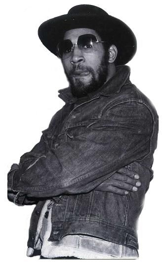
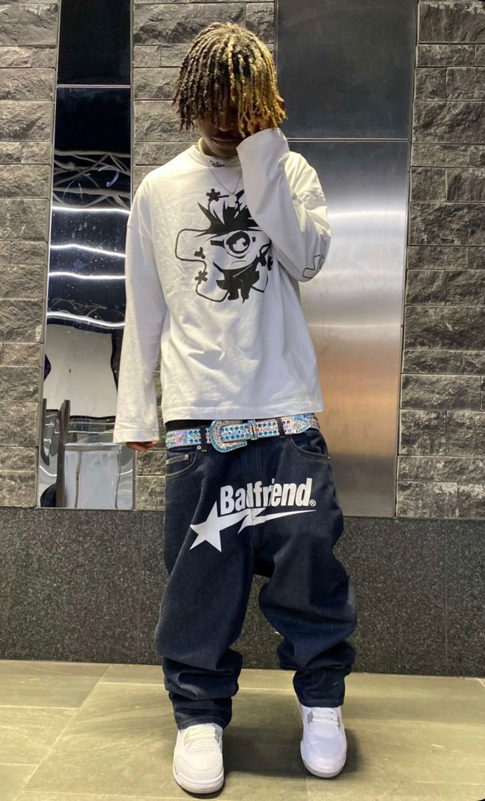
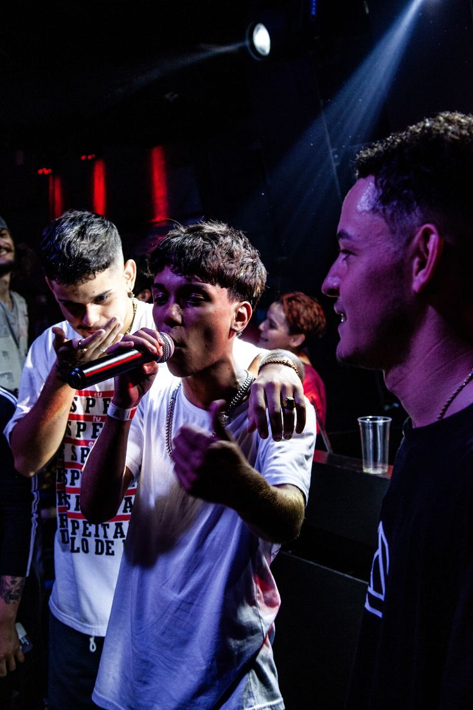

O Hip-Hop não é apenas um gênero musical, mas uma cultura vibrante que nasceu das cinzas de um Bronx em crise no final dos anos 1970. Em meio a desafios sociais e econômicos, com bairros marcados pelo abandono e pela violência, jovens criativos encontraram nas festas de rua — as lendárias Block Parties — um refúgio e uma poderosa forma de expressão. Essas celebrações comunitárias, muitas vezes realizadas em parques ou edifícios abandonados, eram o palco para a inovação e o surgimento de uma nova voz.

DJ Kool Herc, considerado o "pai do Hip-Hop", isolando os "breaks" das músicas para os dançarinos.Afrika Bambaataa e a Zulu Nation, promovendo paz, união e diversão através da cultura Hip-Hop.
Pioneiros como DJ Kool Herc, Afrika Bambaataa e Grandmaster Flash foram fundamentais, inovando com técnicas de mixagem, "scratching" e criando a sonoridade base do movimento. Eles transformaram a discotecagem em uma arte performática, dando origem aos "breaks" que se tornariam a fundação para os MCs e B-boys.
Os Quatro Elementos Fundamentais
A cultura Hip-Hop é composta por quatro pilares interligados, cada um contribuindo para sua riqueza e diversidade:
DJing (Discotecagem)
A arte de manipular toca-discos e mixers para criar batidas, ritmos e sons únicos. O DJ é o coração musical do Hip-Hop, responsável por selecionar e mixar as faixas, além de criar os "breaks" que impulsionam a dança e o rap.
A expressão vocal do Hip-Hop, onde o MC usa rimas, poesia e narrativa sobre as batidas do DJ. É a voz do movimento, abordando temas sociais, pessoais e políticos, e desafiando o status quo com habilidade lírica e ritmo.
Breakdance (B-boying/B-girling)
A dança energética e acrobática que surgiu nas ruas do Bronx. Os B-boys e B-girls combinam movimentos de "toprock" (em pé), "footwork" (no chão), "power moves" (acrobáticos) e "freezes" (posições estáticas), expressando criatividade e agilidade.
Graffiti (Arte Visual)
A arte visual do Hip-Hop, expressa através de letras estilizadas, murais coloridos e "tags" em espaços urbanos. O Graffiti transformou paredes e trens em galerias a céu aberto, sendo uma forma de reivindicação de espaço e identidade para os artistas.
A Era de Ouro (Anos 80 e Início dos Anos 90)
Este período, que se estende aproximadamente de meados dos anos 80 ao início dos anos 90, é amplamente considerado a "Era de Ouro" do Hip-Hop. Foi uma época de explosão criativa, diversificação de estilos e enorme crescimento de popularidade. O gênero amadureceu, e artistas começaram a explorar uma vasta gama de temas e sonoridades.
Grupos como Run-DMC quebraram barreiras, sendo os primeiros a ter um álbum de rap certificado como platina e a aparecer na MTV. O Public Enemy trouxe letras politicamente carregadas e uma sonoridade agressiva, tornando-se a voz da consciência social. O N.W.A. chocou o mundo com seu "gangsta rap" cru e sem censura, enquanto o coletivo Native Tongues (incluindo A Tribe Called Quest, De La Soul e Jungle Brothers) explorava temas mais positivos e jazzísticos. A era também viu a ascensão de ícones femininas como Queen Latifah e Salt-N-Pepa, que abriram caminho para futuras gerações.
A Era de Ouro solidificou o Hip-Hop como uma força cultural global, pavimentando o caminho para sua contínua evolução e domínio na indústria musical.
Os Anos 2000: Expansão e Diversificação
Os anos 2000 marcaram uma nova fase para o Hip-Hop, consolidando-o como a força dominante na música popular global. A virada do milênio trouxe uma onda de diversificação sonora e comercialização sem precedentes. O "gangsta rap" continuou a ter sua relevância, mas novos subgêneros e estilos emergiram, expandindo o alcance do Hip-Hop para públicos ainda maiores.
Artistas como Eminem, Jay-Z, Nelly, 50 Cent, OutKast e Kanye West dominaram as paradas, cada um trazendo sua própria sonoridade e narrativa. O Sul dos EUA, em particular, ganhou destaque com o surgimento do Crunk e do Trap, que se tornariam influências massivas nas décadas seguintes. A produção musical tornou-se mais experimental, incorporando elementos de R&B, pop e eletrônica. O Hip-Hop dos anos 2000 não só vendeu milhões de álbuns, mas também se tornou um pilar da cultura pop, influenciando moda, cinema e televisão de forma inegável.
Eminem, um dos artistas mais vendidos dos anos 2000, expandindo o alcance do rap.Kanye West, um produtor e MC que redefiniu a sonoridade do Hip-Hop na década.
Hino dos Anos 2000: Ouça um Clássico
Ja Rule, Fat Joe, Jadakiss - New York
Mídia Destacada: Vídeos e Músicas
Explore alguns dos vídeos e músicas que marcaram a trajetória do Hip-Hop. Mergulhe nos sons e visuais que definiram gerações e continuam a inspirar artistas em todo o mundo.
Vídeo em Destaque: A Evolução do Hip-Hop
A Evolução do Hip-Hop
Moda Hip-Hop: Estilo e Identidade
A moda é um elemento intrínseco à cultura Hip-Hop, funcionando como uma poderosa forma de expressão de identidade, status e afiliação. Desde suas origens, o estilo Hip-Hop evoluiu de roupas esportivas e oversized para uma influência global que permeia a alta costura e o streetwear.
Nos anos 80, a moda era marcada por agasalhos de veludo, tênis icônicos (como os Adidas Superstar popularizados pelo Run-DMC), correntes de ouro e bonés. Nos anos 90, o baggy style, roupas de grife como Tommy Hilfiger e Ralph Lauren, e marcas de Hip-Hop como FUBU e Sean John, dominaram a cena. Os anos 2000 trouxeram o "bling-bling" com joias extravagantes, roupas de luxo e uma estética mais opulenta. Atualmente, a moda Hip-Hop continua a ser um motor de tendências, com artistas colaborando com grandes casas de moda e influenciando o mercado global com seu estilo autêntico e inovador.
Estilo icônico da Old School, com agasalhos e tênis clássicos.

A moda Hip-Hop continua a evoluir, influenciando o streetwear e a alta costura.
Gangues e Sociedade: Desafios e Resiliência
Desde suas raízes no Bronx, o Hip-Hop esteve intrinsicamente ligado às realidades sociais e econômicas enfrentadas por comunidades marginalizadas, incluindo a presença de gangues. No entanto, o movimento emergiu como uma alternativa poderosa à violência, oferecendo um caminho para a expressão criativa, o reconhecimento e a união.
A cultura Hip-Hop, em muitos aspectos, transformou a energia destrutiva das rivalidades de gangues em competições artísticas pacíficas, como batalhas de rap, breakdance e grafite. Figuras como Afrika Bambaataa, um ex-líder de gangue, canalizaram sua influência para promover a paz e a elevação da comunidade através da Universal Zulu Nation. Embora a representação da vida nas ruas e suas complexidades permaneça um tema no rap, a cultura como um todo tem sido uma força para a resiliência e a transformação social, proporcionando voz e oportunidades para muitos jovens.
Graffiti em um muro, expressando a complexidade das ruas e a arte como forma de expressão.
Impacto Global: O Hip-Hop Pelo Mundo
O Hip-Hop transcendeu suas origens no Bronx para se tornar um fenômeno cultural global. Sua mensagem de autoexpressão, resiliência e a busca por justiça social ressoou em todas as partes do mundo, adaptando-se e misturando-se com as culturas locais, criando subgêneros e movimentos únicos em cada país.
Da França ao Japão, da África do Sul ao Brasil, o Hip-Hop se tornou uma plataforma para vozes diversas, abordando questões locais e globais. O breaking tornou-se um esporte olímpico, e o rap é frequentemente o gênero musical mais consumido em muitos países. Essa expansão global é um testemunho da universalidade de seus temas e da adaptabilidade de seus elementos, provando que o Hip-Hop é verdadeiramente uma força unificadora e transformadora em escala mundial.
Jovens em uma manifestação de Hip-Hop na África do Sul, mostrando o alcance global do movimento.
Hip-Hop no Brasil: Uma Voz das Periferias
No Brasil, o Hip-Hop chegou com força nos anos 80, ganhando raízes profundas nas periferias das grandes cidades. Longe de ser uma mera cópia do movimento americano, o Hip-Hop brasileiro desenvolveu sua própria identidade, tornando-se uma ferramenta potente para a denúncia social, a valorização da cultura afro-brasileira e a luta por direitos e reconhecimento.
Artistas como Racionais MC's, Gabriel o Pensador, Marcelo D2 e MV Bill tornaram-se ícones, abordando em suas letras temas como desigualdade, racismo, violência policial e a realidade das favelas. O graffiti brasileiro, com seus estilos vibrantes, e o breakdance, com suas crews inovadoras, também se estabeleceram como expressões artísticas importantes. O Hip-Hop no Brasil é mais do que música e dança; é um movimento de resistência, educação e transformação social, que continua a dar voz a milhões e a inspirar mudanças.
Racionais MC's, grupo icônico do rap brasileiro, representando a voz das periferias.Graffiti vibrante em São Paulo, uma manifestação da arte de rua no Brasil.
O Legado e o Futuro do Hip-Hop
O legado do Hip-Hop é imenso e multifacetado. De um movimento de contra-cultura nas ruas do Bronx, ele se transformou em uma força cultural e econômica dominante, influenciando música, moda, arte, linguagem e política em todo o mundo. Mais do que entretenimento, o Hip-Hop deu voz a comunidades marginalizadas, promoveu a autoexpressão e serviu como uma plataforma para a mudança social.
O futuro do Hip-Hop promete continuar sua evolução, com novas fusões de gêneros, inovações tecnológicas e a ascensão de novas vozes de todas as partes do planeta. Sua capacidade de se adaptar, de absorver e de inspirar o novo garante que sua influência continuará a moldar a cultura global por muitas décadas. O Hip-Hop não é apenas uma história; é uma jornada contínua de criatividade, resiliência e impacto cultural sem precedentes.

O Hip-Hop continua a evoluir e inspirar novas gerações.


.jpeg)
.jpeg)


.jpeg)

.jpeg)
.jpeg)


{kind=link}
{kind=link}
{kind=link}
{kind=link}
{kind=link}